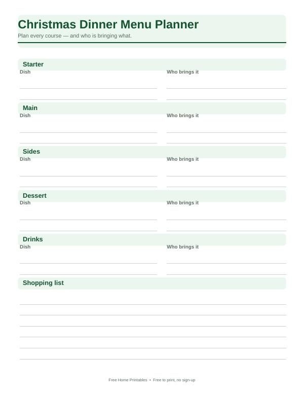

Free printable Christmas dinner menu planner
free Printable Christmas Dinner Menu Planner
Plan the whole Christmas dinner on one page: every course from starter to dessert, who is bringing each dish, and a shopping list for the rest.
Download the free Christmas menu planner PDF
Free PDF, letter size, 1 page, prints at home. No sign-up, no email address needed.
What it looks like
A section for each course — starter, main, sides, dessert, and drinks — with room for the dish and who brings it, plus a shopping list.

A sample Christmas dinner filled in — the printed PDF is blank, ready for your own menu.
| Course | Dish | Who brings it |
|---|---|---|
| Starter | Shrimp cocktail | Aunt Sue |
| Main | Roast turkey | Us |
| Sides | Mashed potatoes | Grandma |
| Dessert | Christmas pudding | Mum |
| Drinks | Eggnog | Dad |
How to use it
- Write each dish under its course.
- Write who is bringing it, so nothing gets cooked twice.
- List everything you still need to buy in the shopping list.
- Take the sheet to the shops — or send it to the family group chat.
How to cook a turkey
A simple roast turkey for Christmas dinner. This is for a 12 to 14 pound turkey, which feeds about 8 to 10 people.
What you need
- 1 whole turkey, 12 to 14 pounds, thawed
- 1/2 cup butter, softened
- Salt and pepper
- 1 onion, cut in quarters
- 1 lemon, cut in half
- A few sprigs of thyme or rosemary
- 4 cups chicken stock, for the pan
Steps
- Thaw the turkey in the fridge — allow 24 hours for every 4 to 5 pounds.
- Heat the oven to 325°F (165°C). Pat the turkey dry with paper towels.
- Season inside and out with salt and pepper, and rub the butter all over the skin and under the breast skin.
- Fill the cavity with the onion, lemon, and herbs. Tie the legs together and tuck the wings under.
- Put the turkey on a rack in a roasting pan and pour the stock into the pan.
- Roast until the thickest part of the thigh reads 165°F (74°C) on a meat thermometer. Cover loosely with foil if the skin browns too fast.
- Rest the turkey for 20 to 30 minutes before carving — it stays juicy. Save the pan drippings for gravy.
Roasting times at 325°F (unstuffed)
| Turkey size | Time |
|---|---|
| 8 to 12 pounds | 2 3/4 to 3 hours |
| 12 to 14 pounds | 3 to 3 3/4 hours |
| 14 to 18 pounds | 3 3/4 to 4 1/4 hours |
| 18 to 20 pounds | 4 1/4 to 4 1/2 hours |
| 20 to 24 pounds | 4 1/2 to 5 hours |
A stuffed turkey needs about 15 to 30 minutes more. Always check the temperature — times are a guide, the thermometer is the test.
Common questions
What courses are on the planner?
Starter, main, sides, dessert, and drinks — two dish lines for each course, with a who-brings-it column.
Is there a shopping list?
Yes, at the bottom of the page, with six lines for everything you still need to buy.
Is the menu planner free?
Yes. The PDF is free, letter size — no sign-up and no email address needed.
The PDF is one page, letter size, and free. Print a fresh copy each Christmas.